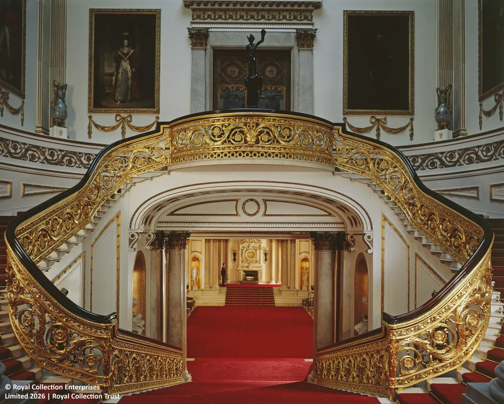
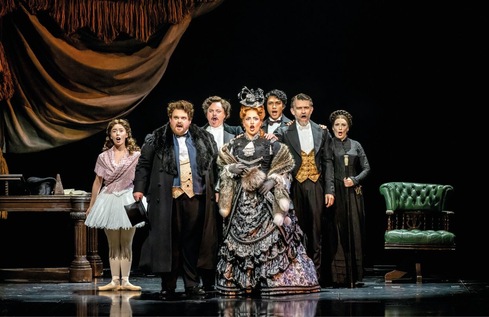

Why London?
London, the leading global city
London is the capital and largest city of England and the United Kingdom. It is a leading global city with strengths in the arts, commerce, education, entertainment, fashion, finance, healthcare, media, professional services, research and development, tourism, and transportation all contributing to its prominence. London has a diverse range of people and cultures, and more than 300 languages are spoken in the region.
London is a world cultural capital. It is the world's most-visited city as measured by international arrivals and has the world's largest city airport system measured by passenger traffic. London is the world's leading investment destination, hosting more international retailers and ultra high-net-worth individuals than any other city. It is also one of the world's largest financial centres and has the fifth- or sixth-largest metropolitan area GDP in the world, depending on measurement.
Places in London
Top 3 attractions in London

Buckingham Palace
Buckingham Palace is the official residence and the administrative headquarters of the monarch of the United Kingdom in London. Located in the City of Westminster, the palace is often at the centre of state occasions and royal hospitality.
Address:
Buckingham Palace, London SW1A 1AA, United Kingdom
What to do:
Visit the State Rooms, watch the Changing of the Guard, and explore the palace grounds.

Phantom of the Opera
Phantom of the Opera is a musical that takes place in the Paris Opera House. It tells the story of a mysterious figure known as the Phantom, who lives beneath the opera house and falls in love with a young soprano named Christine.
Address:
Phantom of the Opera, London WC2E 7HR, United Kingdom
What to do:
Watch the musical, visit the theatre, and explore the surrounding area.

St. Paul's Cathedral
St. Paul's Cathedral is an Anglican cathedral in London, England. It is the mother church of the Diocese of London and the seat of the Bishop of London.
Address:
St. Paul's Cathedral, London EC4A 3AU, United Kingdom
What to do:
Visit the cathedral, attend a service, and explore the surrounding area.